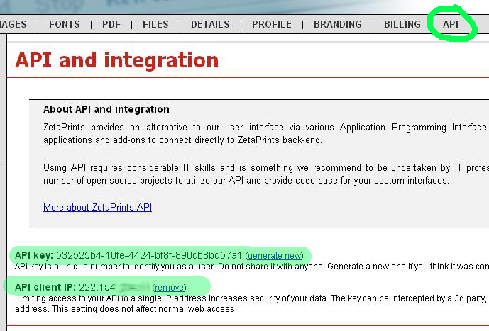

<?xml version="1.0" encoding="UTF-8"?><rss version="2.0"
	xmlns:content="http://purl.org/rss/1.0/modules/content/"
	xmlns:wfw="http://wellformedweb.org/CommentAPI/"
	xmlns:dc="http://purl.org/dc/elements/1.1/"
	xmlns:atom="http://www.w3.org/2005/Atom"
	xmlns:sy="http://purl.org/rss/1.0/modules/syndication/"
	xmlns:slash="http://purl.org/rss/1.0/modules/slash/"
	>

<channel>
	<title>API &#8211; On web to print sofware, solutions and hosted services</title>
	<atom:link href="http://www.zetaprints.com/blog/category/api/feed/" rel="self" type="application/rss+xml" />
	<link>http://www.zetaprints.com/blog</link>
	<description>From web to print and everything in between</description>
	<lastBuildDate>Fri, 02 Aug 2013 10:44:32 +0000</lastBuildDate>
	<language>en-US</language>
	<sy:updatePeriod>hourly</sy:updatePeriod>
	<sy:updateFrequency>1</sy:updateFrequency>
	<generator>https://wordpress.org/?v=4.4.1</generator>
	<item>
		<title>Interactive web-to-print personalization changes</title>
		<link>http://www.zetaprints.com/blog/2010/06/12/interactive-web-to-print-personalization-changes/</link>
		<comments>http://www.zetaprints.com/blog/2010/06/12/interactive-web-to-print-personalization-changes/#respond</comments>
		<pubDate>Sat, 12 Jun 2010 11:12:13 +0000</pubDate>
		<dc:creator><![CDATA[admin]]></dc:creator>
				<category><![CDATA[API]]></category>
		<category><![CDATA[web-to-print software]]></category>
		<category><![CDATA[change]]></category>
		<category><![CDATA[image editing]]></category>

		<guid isPermaLink="false">http://www.zetaprints.com/blog/?p=573</guid>
		<description><![CDATA[We introduced interactive design personalization features in our latest stable release of Magento web-to-print extension. More changes coming this weekend. The way dynamic imaging shape coordinates were set up turned out to be a dead end approach and quite inconsistent. We had to change the coordinates from bottom-left corner to top-left corner, as it is [&#8230;]]]></description>
				<content:encoded><![CDATA[<p>We introduced <a title="interactive imaging" href="../../../../magento-web-to-print/magento-interactive-personalization/">interactive design personalization features</a> in our <a title="Magento web-to-print" href="../../../2010/06/08/web-to-print-extension-for-magento-update/">latest stable release</a> of Magento web-to-print extension. More changes coming this weekend.</p>
<p>The way dynamic imaging shape coordinates were set up turned out to be a dead end approach and quite inconsistent. We had to change the coordinates from bottom-left corner to top-left corner, as it is in browsers and most image rendering. The units used for the coordinates are also changing.</p>
<p>This change should affect only those few customers who implemented their own interactive editing scripts. If you are the one and we have not contacted you, please, get in touch ASAP.</p>
<h2>Magento implementation changes</h2>
<p>Existing templates will continue to function with the current Magento release.</p>
<p>New templates processed after the change will require a new beta release, which will be published on the same day as the API change.</p>
<h2>Still experimental</h2>
<p>Interactive personalization will be an experimental web-to-print feature for about a month more until we finish implementation of advanced text/image editing, such as font size change, image resizing, cropping, shifting, all in context of a web-to-print template preview.</p>
<div style="width: 287px" class="wp-caption alignnone"><p class="wp-caption-text">interactive web-to-print</p></div>
<div style="width: 432px" class="wp-caption alignright"><p class="wp-caption-text">in-preview dynamic imaging</p></div>
]]></content:encoded>
			<wfw:commentRss>http://www.zetaprints.com/blog/2010/06/12/interactive-web-to-print-personalization-changes/feed/</wfw:commentRss>
		<slash:comments>0</slash:comments>
		</item>
		<item>
		<title>Image editing API for web-to-print</title>
		<link>http://www.zetaprints.com/blog/2010/01/28/image-editing-api-for-web-to-print/</link>
		<comments>http://www.zetaprints.com/blog/2010/01/28/image-editing-api-for-web-to-print/#respond</comments>
		<pubDate>Fri, 29 Jan 2010 02:22:14 +0000</pubDate>
		<dc:creator><![CDATA[admin]]></dc:creator>
				<category><![CDATA[API]]></category>
		<category><![CDATA[web-to-print features]]></category>
		<category><![CDATA[web-to-print software]]></category>
		<category><![CDATA[magento]]></category>

		<guid isPermaLink="false">http://www.zetaprints.com/blog/?p=550</guid>
		<description><![CDATA[We released a beta version of some image management and image editing functions for our web-to-print API. There is not much at the moment: get list of images get image details upload new delete crop rotate edit title Some other functions are in stealth mode and will be released soon: copy to different folder move [&#8230;]]]></description>
				<content:encoded><![CDATA[<p>We released a beta version of some <a title="image management for web-to-print" href="../../../../help/web-to-print-image-library-api/">image management</a> and <a title="image editing for web-to-print" href="../../../../help/image-editing-api/">image editing</a> functions for our <a title="web-to-print API" href="../../../../help/category/api/">web-to-print API</a>.</p>
<p>There is not much at the moment:</p>
<ul>
<li>get list of images</li>
<li>get image details</li>
<li>upload new</li>
<li>delete</li>
<li>crop</li>
<li>rotate</li>
<li>edit title</li>
</ul>
<p>Some other functions are in stealth mode and will be released soon:</p>
<ul>
<li>copy to different folder</li>
<li>move to different folder</li>
</ul>
<p>We want to add a few filters to the mix, e.g. grayscale,  sepia, watercolor, etc. Need your input on what you think will be popular with your web-to-print customers. Your suggestion on what you think is a good implementation of this functionality are very welcome.</p>
<p>Web-to-print image editing will appear in our <a title="web-to-print for magento" href="../../../../magento/">Magento web-to-print plugin</a> first and then will be transferred to the core user interface. This is <a title="image editing for magento" href="http://code.google.com/p/magento-w2p/issues/detail?id=110">work in progress</a> at the moment.</p>
]]></content:encoded>
			<wfw:commentRss>http://www.zetaprints.com/blog/2010/01/28/image-editing-api-for-web-to-print/feed/</wfw:commentRss>
		<slash:comments>0</slash:comments>
		</item>
		<item>
		<title>Magento update</title>
		<link>http://www.zetaprints.com/blog/2009/11/26/magento-update/</link>
		<comments>http://www.zetaprints.com/blog/2009/11/26/magento-update/#respond</comments>
		<pubDate>Fri, 27 Nov 2009 01:39:40 +0000</pubDate>
		<dc:creator><![CDATA[admin]]></dc:creator>
				<category><![CDATA[API]]></category>
		<category><![CDATA[web-to-print software]]></category>
		<category><![CDATA[magento. web-to-print extension]]></category>

		<guid isPermaLink="false">http://www.zetaprints.com/blog/?p=523</guid>
		<description><![CDATA[We are close to releasing a new version of our web-to-print extension for Magento. It doesn&#8217;t really have anything changed on the surface, but it&#8217;s been re-written from ground up. Theme integration We used to have a lot of code included in the theme files. Every time we made an update the theme would need [&#8230;]]]></description>
				<content:encoded><![CDATA[<p>We are close to releasing a new version of our web-to-print extension for Magento.</p>
<p>It doesn&#8217;t really have anything changed on the surface, but it&#8217;s been re-written from ground up.</p>
<h2>Theme integration</h2>
<p>We used to have a lot of code included in the theme files. Every time we made an update the theme would need to be changed. Now the theme files have only a handful of function calls with all the other extension code sitting on extension files. It is <a title="web-to-print theme integration" href="How%20it%20integrates%20into%20the%20theme./index.html ">much easier to integrate</a> and doesn&#8217;t need a developer every time we release an update.</p>
<h2>Simple product creation</h2>
<p>Products used to be created during the data import. It worked OK only if you needed simple products. Many product types need to be configurable products. Now we added an additional function to create simple products from unallocated templates.</p>
<h2>Data import</h2>
<p>Templates are imported into a new table in Magento. Then can be converted into simple products at this stage and we are working on adding links to configurable products.</p>
<h2>Order placement</h2>
<p>A new product was created every time an order was placed. Now it is just a normal Magento order with additional attributes holding ZP info such as file locations, etc.</p>
<p>Order parameters</p>
<p>If you choose to do a 2-step process where the user has to pick all the order parameters (stock type, envelopes, packaging, quantity, etc.)  on page 1 and then go to the personalisation page the parameters would be lost, unless you write the code to handle them on the personalisation page as well.</p>
<p>We added an additional feature to capture them and transfer to the cart. This is now part of the extension.</p>
<h2>Work in progress</h2>
<p>This iteration is still in a pre-release stage. We have <a title="current iteration" href="http://code.google.com/p/magento-w2p/issues/list?can=2&q=label:indevelopment">a few issues</a> to iron out before it is ready. The latest code has been committed to the <a title="w2p extension code" href="http://code.google.com/p/magento-w2p/source/browse/#svn/trunk">SVN</a>.</p>
]]></content:encoded>
			<wfw:commentRss>http://www.zetaprints.com/blog/2009/11/26/magento-update/feed/</wfw:commentRss>
		<slash:comments>0</slash:comments>
		</item>
		<item>
		<title>Open source update</title>
		<link>http://www.zetaprints.com/blog/2009/04/24/open-source-update/</link>
		<comments>http://www.zetaprints.com/blog/2009/04/24/open-source-update/#respond</comments>
		<pubDate>Fri, 24 Apr 2009 11:27:40 +0000</pubDate>
		<dc:creator><![CDATA[admin]]></dc:creator>
				<category><![CDATA[API]]></category>
		<category><![CDATA[web-to-print features]]></category>
		<category><![CDATA[web-to-print software]]></category>

		<guid isPermaLink="false">http://www.zetaprints.com/blog/?p=379</guid>
		<description><![CDATA[We have a number of open source projects on the go. They are tools built around ZetaPrints web-to-print API to help you get more than what we can offer through our standard web-to-print interface. Your feedback and ideas are highly appreciated. E-cards You can look at it as an Embeddable ZetaPrints.  Try it out. The [&#8230;]]]></description>
				<content:encoded><![CDATA[<p>We have a number of open source projects on the go. They are tools built around ZetaPrints web-to-print API to help you get more than what we can offer through our standard web-to-print interface. Your feedback and ideas are highly appreciated.</p>
<h2>E-cards</h2>
<p>You can look at it as an Embeddable ZetaPrints.  <strong><a title="e-cards plugin" href="http://www.zetaprints.ru/ecard">Try it out</a></strong>.</p>
<p>The original idea was to provide a simple interface for little fun things like sending e-cards online or preparing an email signature. It turned out that this plugin can be used to embed web-to-print and image generation into any other website.</p>
<p>The plugin is still under development. This is early days. It cannot upload files or place orders, but it will soon.</p>
<p>Project location: <a title="e-cards plugin" href="http://code.google.com/p/e-cards-plugin/">http://code.google.com/p/e-cards-plugin/</a></p>
<h2>Magento integration</h2>
<p>The sad realisation we cannot satisfy all web-to-print and image generation customers with a single interface is depressingly demoralizing to the great SaaS promise.  </p>
<p>Don&#8217;t like the way we look ? Don&#8217;t like our workflow, content of our emails, whatever else?</p>
<p>No worries! Create a Magento store. Configure it the way you want. Install the extension we are developing and show ZetaPrints web-to-print in an IFRAME or using the e-cards plugin as an embeddable Flash. You will still upload and manage templates within ZetaPrints environment, but the rest will be done by Magento.</p>
<p>Although Magento and our extension for it are open source there will be cost involved to get a fully functional store up and running. Everything needs to be installed, configured, hosted, updated, etc. It may range between few hundred and a few thousand dollars, plus the regular maintenance costs.</p>
<p>Project location: <a href="http://code.google.com/p/magento-w2p/">http://code.google.com/p/magento-w2p/</a></p>
<h2>Order manager</h2>
<p><a title="web-to-print manager" href="http://code.google.com/p/zetaclient/downloads/list">http://code.google.com/p/zetaclient/downloads/list</a></p>
<p>This desktop application downloads all your orders to your local machine, puts them in a local database and lets you manipulate them the way you want.</p>
<p>The application is written in C# and runs on Windows. It is still full of bugs and is not very user friendly. We are working on making usable.</p>
<p>Feel free to use it as a starting point for your own download manager. For example, your version my download orders automatically and route files directly to hot folders depending on certain criteria.</p>
<p>Project location: <a title="web-to-print manager" href="http://code.google.com/p/zetaclient/">http://code.google.com/p/zetaclient/</a></p>
<h2>OpenX plugin</h2>
<p>OpenX is up and coming ad manager. It is open source and we created a simple plugin that connects OpenX banner interface with ZetaPrints image generation API.</p>
<p>If you happen to run a banner campaign and don&#8217;t quite have that banner file yet you can always jump to ZetaPrints make one from a template. You know, takes seconds. The plugin puts the banner into OpenX database automatically and don&#8217;t need to upload anything at all.</p>
<p>Watch this <a title="OpenX plugin" href="../../../../help/flash/OpenX_Demo/OpenX_demo.html">demo</a> to see it in action.</p>
<p>Project location: <a href="http://code.google.com/p/openx-banner-creator/">http://code.google.com/p/openx-banner-creator/</a></p>
]]></content:encoded>
			<wfw:commentRss>http://www.zetaprints.com/blog/2009/04/24/open-source-update/feed/</wfw:commentRss>
		<slash:comments>0</slash:comments>
		</item>
		<item>
		<title>New API developments</title>
		<link>http://www.zetaprints.com/blog/2009/04/01/new-api-developments/</link>
		<comments>http://www.zetaprints.com/blog/2009/04/01/new-api-developments/#comments</comments>
		<pubDate>Thu, 02 Apr 2009 04:26:28 +0000</pubDate>
		<dc:creator><![CDATA[admin]]></dc:creator>
				<category><![CDATA[API]]></category>
		<category><![CDATA[web-to-print software]]></category>

		<guid isPermaLink="false">http://www.zetaprints.com/blog/?p=354</guid>
		<description><![CDATA[We spent quite a bit of time adding more API features in the last few weeks. Several customers are building their custom web-to-print portals using ZetaPrints only in updating templates and generating output parts of their workflow. They manage their own users, orders and payments, but on the upside they get a total freedom of [&#8230;]]]></description>
				<content:encoded><![CDATA[<p>We spent quite a bit of time adding more <a title="web-to-print API" href="../../../../help/category/api/">API features</a> in the last few weeks. Several customers are building their custom web-to-print portals using ZetaPrints only in updating templates and generating output parts of their workflow. They manage their own users, orders and payments, but on the upside they get a total freedom of website design and workflow.</p>
<p>We are looking at integrating with an open source <a href="http://www.magentocommerce.com/">Magneto e-Commerce</a> application. It&#8217;s a relatively new player in e-commerce field, but gaining popularity rapidly. Integration with other e-commerce software like Joomla or os-Commerce is on the cards, but won&#8217;t proceed unless someone requests it.  Our all-time favorite WordPress is not a good fit at this level. WordPress  is  a Content Management System, not an e-Commerce one.</p>
<p><span style="color: #ff0000;"><strong>If you think our interface sucks</strong>, but still would like to use the power of our back end it&#8217;s time to email <a title="Contact ZetaPrints" href="mailto:support@zetaprints.com" target="_self">support@zetaprints.com</a> and start working on a Magneto implementation.</span> We will provide all necessary extensions and integration, but you have to make the portal work for you using your own resources.<br />
What you get in the end will be a highly specialized web-to-print portal doing exactly what you need the way you need.</p>
<h2>More about API</h2>
<p>What you can do with our <a title="web to print API" href="../../../../help/category/api/">web-to-print API</a> falls into several categories.</p>
<ul>
<li>View list of orders as XML</li>
<li>View order details as XML</li>
<li>Generate output files from saved orders</li>
<li>View list of templates per catalog as XML</li>
<li>View template details as XML</li>
<li>Dynamically generate previews by submitting data directly into ZetaPrints API</li>
<li>Show ZetaPrints in an <a title="web-to-print IFRAME demo" href="../../../../help/samples/embedded-image-generator.html">IFRAME</a> (with or without top and left menus or the order form)</li>
<li>Register new users</li>
<li>Grant / deny user access to catalogs</li>
<li>Resize preview and photo-thumbnails images on the fly</li>
<li>Log users in on referral (for <a title="web-to-print IFRAME demo" href="../../../../help/samples/embedded-image-generator.html">IFRAME implementation</a> )</li>
</ul>
<p>Altogether, these interfaces allow full control needed to run a custom web-to-print portal using some other platform and tap into our powerful web-to-print engine.</p>
]]></content:encoded>
			<wfw:commentRss>http://www.zetaprints.com/blog/2009/04/01/new-api-developments/feed/</wfw:commentRss>
		<slash:comments>1</slash:comments>
		</item>
		<item>
		<title>Web to print API</title>
		<link>http://www.zetaprints.com/blog/2008/10/22/web-to-print-api/</link>
		<comments>http://www.zetaprints.com/blog/2008/10/22/web-to-print-api/#comments</comments>
		<pubDate>Thu, 23 Oct 2008 03:07:44 +0000</pubDate>
		<dc:creator><![CDATA[admin]]></dc:creator>
				<category><![CDATA[API]]></category>
		<category><![CDATA[web-to-print features]]></category>
		<category><![CDATA[web-to-print software]]></category>

		<guid isPermaLink="false">http://www.zetaprints.com/blog/?p=247</guid>
		<description><![CDATA[We&#8217;ve just released our first web to print API, which is a direct connection to the back end. At the moment it&#8217;s pretty basic &#8211; download list of orders and order details per order, but it&#8217;s a first step in a new direction The aim here is to give you a way of doing things [&#8230;]]]></description>
				<content:encoded><![CDATA[<p>We&#8217;ve just released our first <a title="web to print api" href="../../../../help/category/api/">web to print API</a>, which is a direct connection to the back end.</p>
<div style="width: 699px" class="wp-caption alignnone"><a href="../../../../help/category/api/"></a><p class="wp-caption-text">web-to-print API</p></div>
<p>At the moment it&#8217;s pretty basic &#8211; download list of orders and order details per order, but it&#8217;s a first step in a new direction</p>
<p>The aim here is to give you a way of doing things your way without too much dependence on our interface. You can build you tools, pages, add-ons, desktop and server clients that utilise the power of our back end behind your own user interfaces.</p>
<p>Orders API is designed to help you manage them more efficiently and integrate into your MIS. We kicked off an open source project for a desktop client that downloads new orders on a regular basis and puts them into your hot folders. It is supposed to do all sorts of things, like file renaming, connecting to multiple accounts at ones, routing PDFs, etc.</p>
<p>Importing order details into your MIS or accounting s/w should not be a problem as long as you can download the order details from the site. The data comes to you in a structured XML form. Any half-decent programmer should be able to hack it for in no time. We try to keep it as simple as possible.</p>
]]></content:encoded>
			<wfw:commentRss>http://www.zetaprints.com/blog/2008/10/22/web-to-print-api/feed/</wfw:commentRss>
		<slash:comments>2</slash:comments>
		</item>
	</channel>
</rss>

<!-- Localized -->